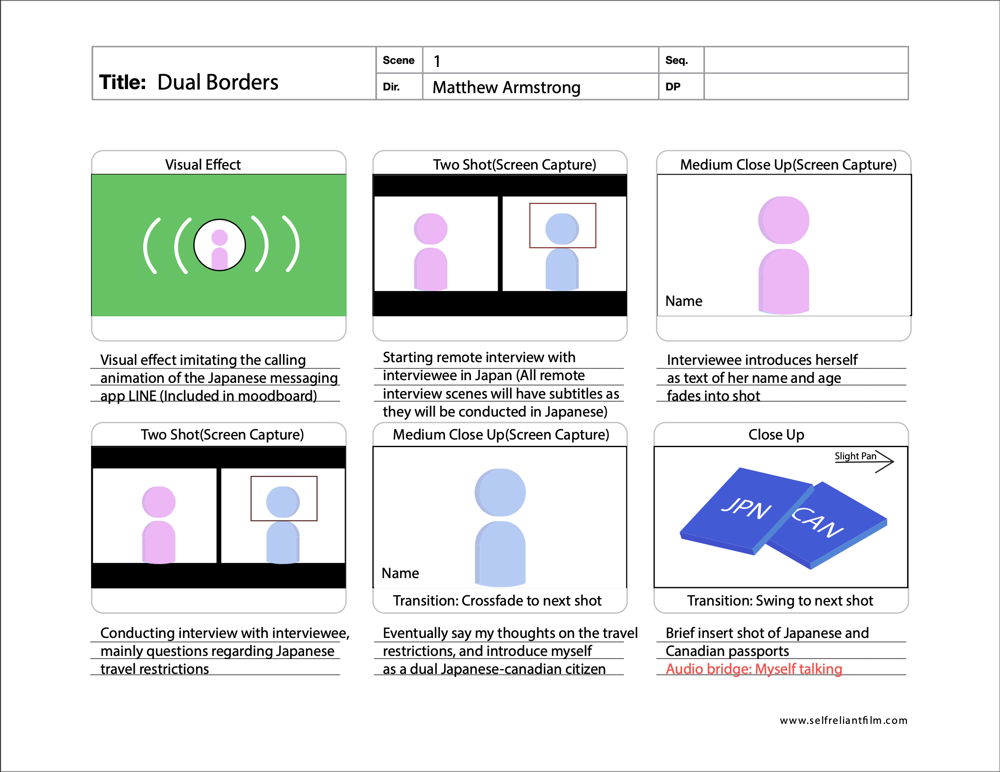
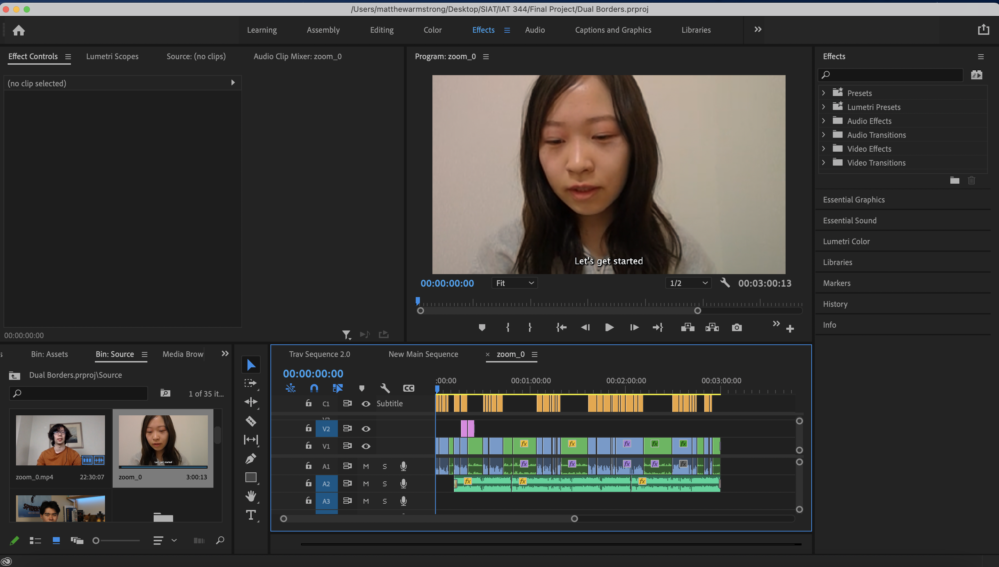
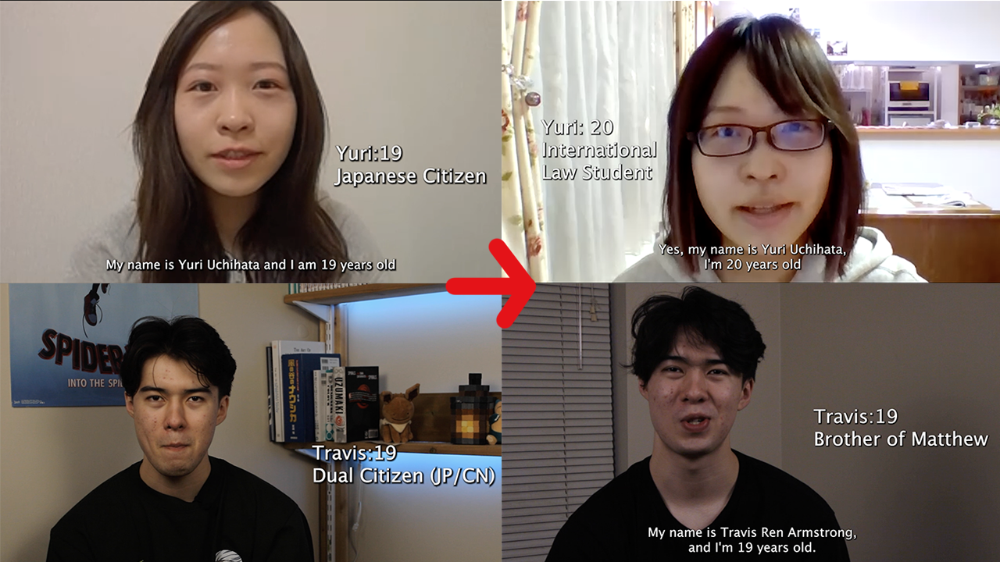

Dual Borders
Overview
Dual Borders was a short documentary film project for SFU's IAT 344 Moving Images class. In collaboration with the Museum of Vancouver, we were given the theme "Isolating Together" and told to document an aspect of the COVID-19 pandemic experience. The particular angle I chose within this theme was my own experience of being a dual-citizen of Canada and Japan, and how this affected travel between the two countries as well as my own identity within them.
Pre-Production
The initial topic of the film came to me fairly early, I was able to focus the conceptualization stage of pre-production on the execution of the film. My initial idea was to create a stop-motion film using objects in my home, as I felt that was a way to highlight the theme of "Isolating Together". However, after recieving feedback from the course's teaching assistant that I should not remove the human element from my story, I decided to take on a more traditional documentary form by interviewing two people who I thought could give varying viewpoints on the topic. Once the concept was finalized, I began developing storyboards and shotlists while scheduling interviews with my interviewees.
Production: Rough Cut
When I started developing the rough cut of the film, I encountered a challenge. I realized that my original vision was not going to fit in the three minute time frame that was allocated from the project. Short on time and unable to reshoot immediately, I did what I could with the footage I had and readjusted the structure of the film to fit the time frame while still making sense.
When I showed the rough cut for feedback, both the professor and the teaching assistant made the comment that in its current state, my film lacked a story. While they both agreed my topic was interesting, the way that I presented it made it seem like none of the people in the film really had a problem pertaining to it. Hearing this made me realize my mistake: In an attempt to salvage the pieces and create something cohesive, I had removed the parts of my footage that actually conveyed my message. Of course this was not my only problem, but this particular piece of feedback was what allowed me to make better production decisions moving forward with the final cut.
Production: Final Cut
With the feedback in mind and a clearer idea of my story, I started the production of my final cut. The first thing I did was reshoot all of my interview footage. This was done both to produce higher quality shots, but also to ask my interviewees new questions that I felt were needed to convey the story. I also added "interview" footage of myself. I decided to do this after thinking about the feedback given to me, specifically how the professor mentioned what drew her to my concept initially was my family and I's issues with the topic. After some deliberation, I came to the realization that the one with the most immediate problem relating to the topic was myself, and as such that my voice was necessary in the film. With these new shots and some much needed b-roll in hand, the first version of my final cut became much stronger than my rough cut was.

After one last round of feedback, I started touching up the film for submission. This involved colour correcting some of my shots, as well as removing certain sections of the film entirely. The sections that were removed were sections that disrupted the flow of the story, and were ultimately not needed in the film. Seeing as how I was cutting close to four minutes in the first version of the final cut, this process also helped bring down overall runtime and improve pacing as well.
Result
My final version of the film, while admittedly not my best work, became something much better than the original iteration, and something that sufficiently conveyed my intent and story. Through this project, I experienced the production of a documentary film, which was something I had not done before, and was able to learn how to convey a story that was grounded in non-fiction rather than in my own creation.